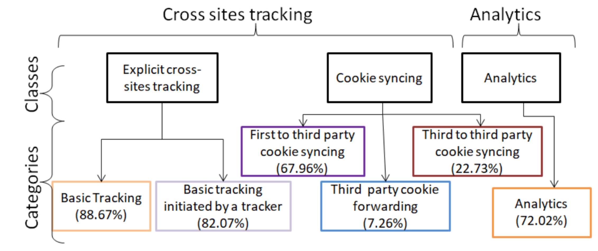
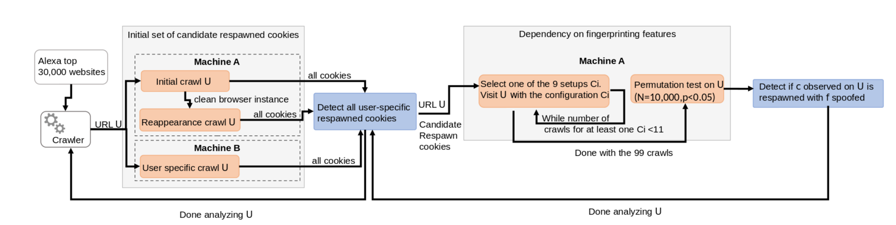
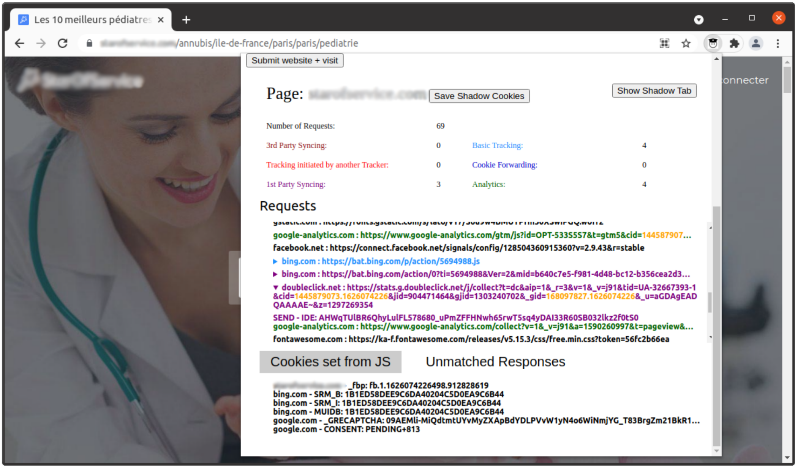

Overview
Privacy on the Web is an extraordinary complex and poorly understood issue: extraordinary complex because the Web is at the root of the entire advertisement industry on the internet, a huge ecosystem generating trillions of dollar revenues spread among numerous actors each playing a key role on profiling users and selecting advertisements; poorly understood because most people believe, mainly due to the cookie banners that are everywhere on the Web thanks to the ePrivacy directive and GDPR, that, on the one hand, third-party cookies are responsible for their profiling and, on the other hand, they can easily be blocked, giving a false sense of protection.
The goal of this project is to evaluate how greasy cookies are, that is which traces remain despite efforts to clean them up. Said in other words, if you block or clean cookies, can you still be tracked? We show that not only you can still be tracked, but that the advertisement industry is already using sophisticated tracking techniques that work around the yet to be deployed deprecation of third party cookies by Web browsers.
Contributions
Missed by Filter Lists: Detecting Unknown Third-Party Trackers with Invisible Pixels
Web tracking has been extensively studied over the last decade. To detect tracking, previous studies and user tools rely on filter lists. However, it has been shown that filter lists miss trackers. In this work, we propose an alternative method to detect trackers inspired by analyzing behavior of invisible pixels. By crawling 84,658 webpages from 8,744 domains, we detect that third-party invisible pixels are widely deployed: they are present on more than 94.51% of domains and constitute 35.66% of all third-party images. We propose a fine-grained behavioral classification of tracking based on the analysis of invisible pixels. We use this classification to detect new categories of tracking and uncover new collaborations between domains on the full dataset of 4,216,454 third-party requests. We demonstrate that two popular methods to detect tracking, based on EasyList&EasyPrivacy and on Disconnect lists respectively miss 25.22% and 30.34% of the trackers that we detect. Moreover, we find that if we combine all three lists, 379,245 requests originated from 8,744 domains still track users on 68.70% of websites.

My Cookie is a phoenix: detection, measurement, and lawfulness of cookie respawning with browser fingerprinting
Stateful and stateless web tracking gathered much attention in the last decade, however they were always measured separately. To the best of our knowledge, our study is the first to detect and measure cookie respawning with browser and machine fingerprinting. We develop a detection methodology that allows us to detect cookies dependency on browser and machine features. Our results show that 1,150 out of the top 30,000 Alexa websites deploy this tracking mechanism. We find out that this technique can be used to track users across websites even when third-party cookies are deprecated. Together with a legal scholar, we conclude that cookie respawning with browser fingerprinting lacks legal interpretation under the GDPR and the ePrivacy directive, but its use in practice may breach them, thus subjecting it to fines up to 20 million €.

In-Depth Technical and Legal Analysis of Tracking on Health Related Websites with ERNIE Extension
Searching the Web to find doctors and make appointments online is a common practice nowadays. However, simply visiting a doctors website might disclose health related information. As the GDPR only allows processing of health data with explicit user consent, health related websites must ask consent before any data processing, in particular when they embed third party trackers. Admittedly, it is very hard for owners of such websites to both detect the complex tracking practices that exist today and to ensure legal compliance. In this work, we present Ernie, a browser extension we designed to visualise six state-of-the-art tracking techniques based on cookies. Using Ernie, we analysed 385 health related websites that users would visit when searching for doctors in Germany, Austria, France, Belgium, and Ireland. More specifically, we explored the tracking behavior before any interaction with the consent pop-up and after rejection of cookies on websites of doctors, hospitals, and health related online phone-books. We found that at least one form of tracking occurs on 62% of the websites before interacting with the consent pop-up, and 15% of websites include tracking after rejection. Finally, we performed a detailed technical and legal analysis of three health related websites that demonstrate impactful legal violations. This work shows that while, from a legal point of view, health related websites are more privacy-sensitive than other kinds of websites, they are exposed to the same technical difficulties to implement a legally compliant website. We believe Ernie, the browser extension we developed, to be an invaluable tool for policy-makers and regulators to improve detection and visualization of the complex tracking techniques used on these websites.

Software
ERNIE is an open-source browser extension that lets you easily and quickly discover complex Web tracking techniques that we discuss in our [PETS20] paper. Upon a visit to a webpage, the extension analyzes all HTTP-request and categorizes each as non-tracking or into one of six tracking categories presented in Fig. 1. This allows the user to get a quick overview on the tracking techniques used by websites. For a more in-depth analysis, it is optionally possible to save the data in a local database.
Papers
- [PETS22]
- Imane Fouad, Cristiana Santos, Arnaud Legout, Nataliia Bielova. My Cookie is a phoenix: detection, measurement, and lawfulness of cookie respawning with browser fingerprinting. In Proc. of Privacy Enhancing Technologies Symposium (PETS 2022), July 11–-15, 2022. Sydney, Australia. download
award Received an Honorary Mention for the Student Paper Award for the Future of Privacy Forum’s annual Privacy Papers for Policymakers. - [WPES21]
- Vera Wesselkamp, Imane Fouad, Cristiana Santos, Yanis Boussad, Nataliia Bielova, Arnaud Legout. In-Depth Technical and Legal Analysis of Tracking on Health Related Websites with ERNIE Extension. In Proc. of WPES'21, November 15, 2021. Seoul, South Korea. download
The ERNIE extension is available here or on github. - [PETS20]
- Imane Fouad, Nataliia Bielova, Arnaud Legout, Natasa Sarafijanovic-Djukic. Missed by Filter Lists: Detecting Unknown Third-Party Trackers with Invisible Pixels. In Proc. of Privacy Enhancing Technologies Symposium (PETS 2020), July 14--18, 2020, Montréal, Canada. download
This paper is accepted for presentation at PrivacyCon 2021 on July 27th, 2021.
Members
- Imane Fouad (Postdoctoral Researcher at Université de Lille, CNRS, Inria)
- Vera Wesselkamp (Master student, Inria)
- Nataliia Bielova (Research Scientist, Inria, project leader)
- Arnaud Legout (Research Scientist, Inria)
- Cristiana Santos (Assistant Professor of Law&Tech, Utrecht University)
- Yanis Boussad (Research fellow, University of Leeds)
- Natasa Sarafijanovic-Djukic (Researcher in Applied Machine Learning at Fernfachhochschule Schweiz)